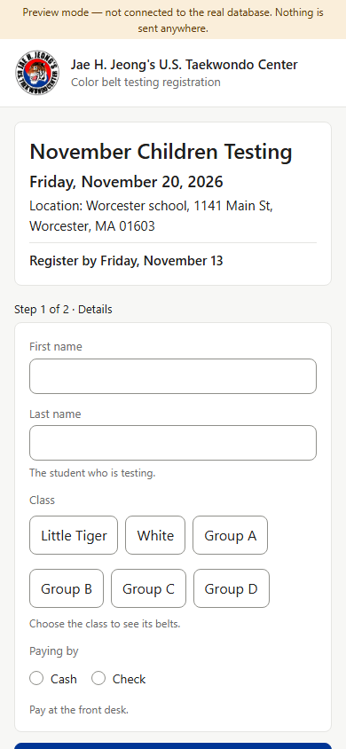
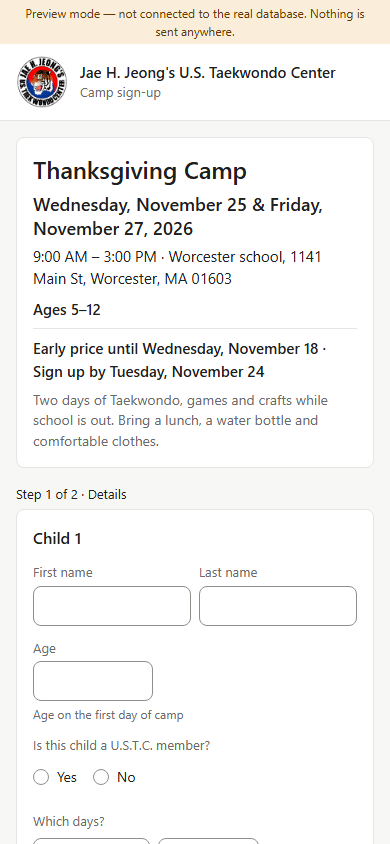
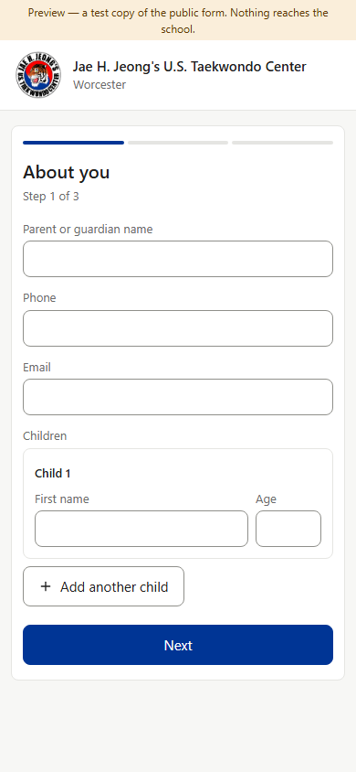
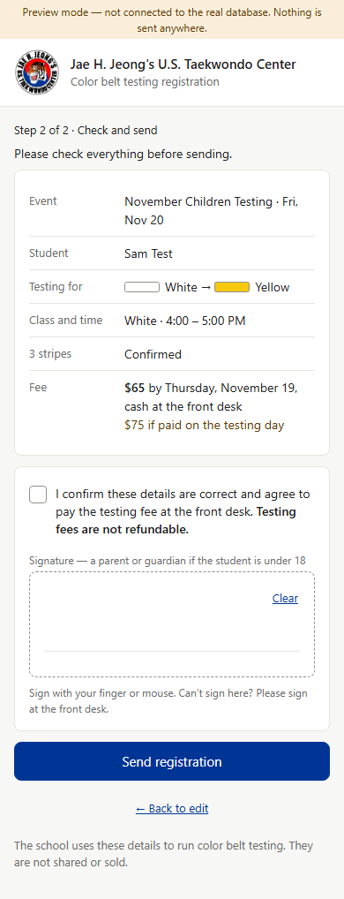
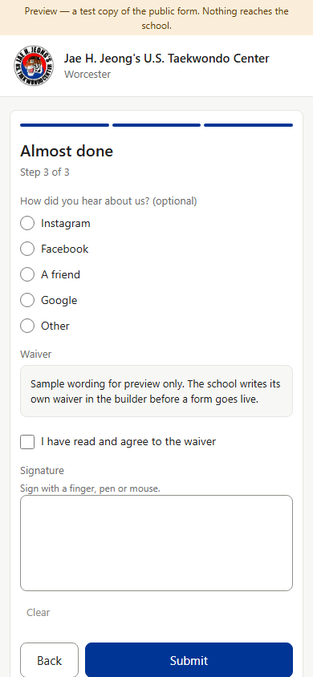
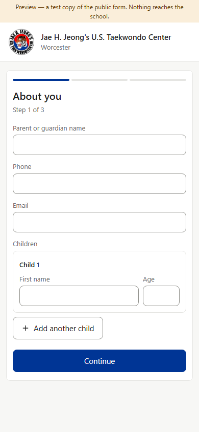
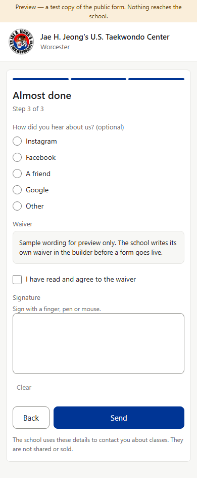

Approved in each section. The pages families fill in on their phones already share one look: the school's logo, the event card, “Step 1 of 2 · Details”, Continue, then a “Check and send” page (Color Belt, Star, Black Belt: “Send registration” → “[name] is registered”; Camps: “Check and sign” → “Sign up” → “You're signed up”). Forms — the free-class sign-up, also used on the desk tablet — is the different one, and approved that way (v0.235): three short steps with a progress bar, Next, no check page, Submit → “Thanks, Sam!”. (Preview screenshots at phone size, 390 wide · fake data — nothing was sent)






